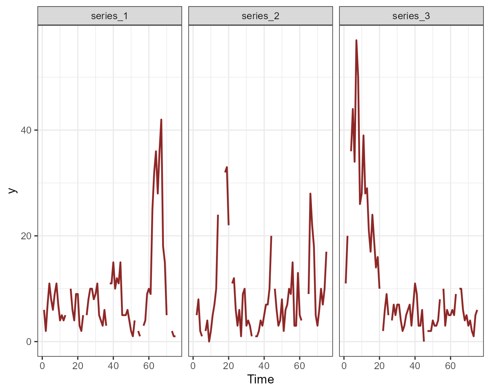
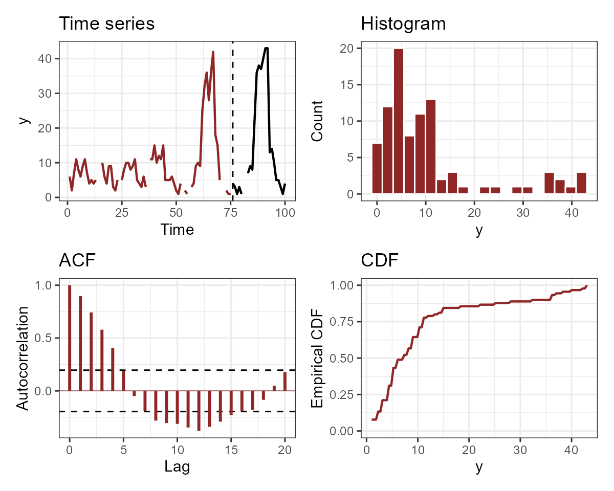
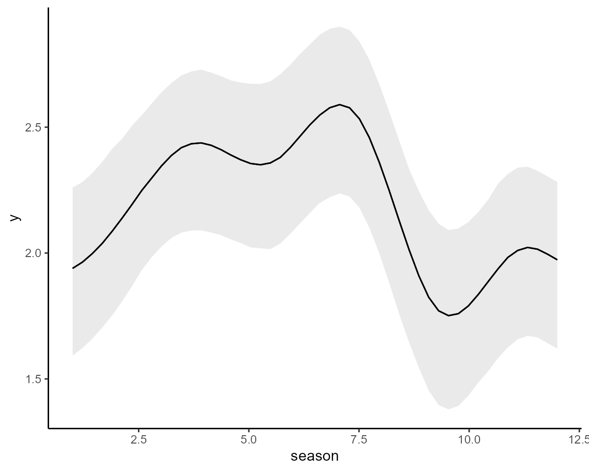
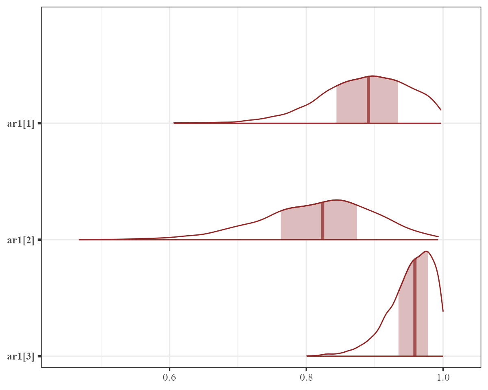
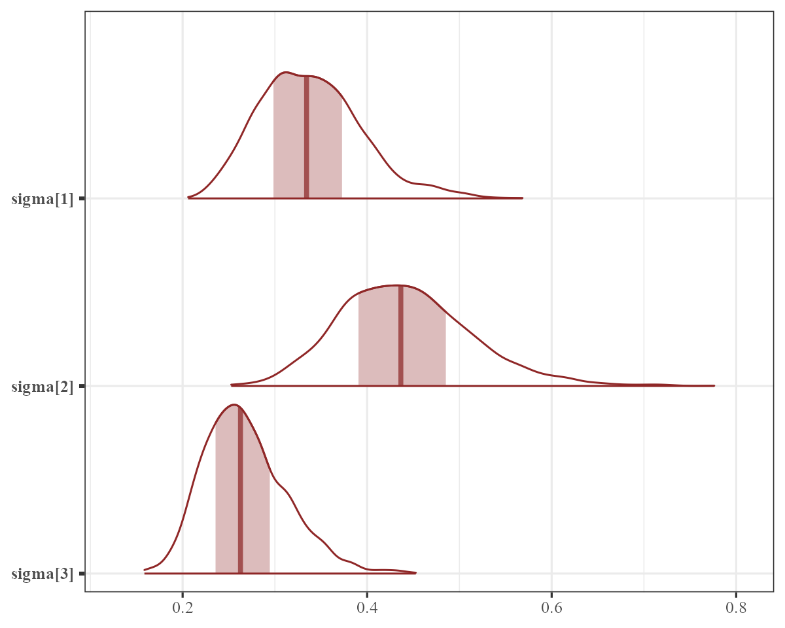
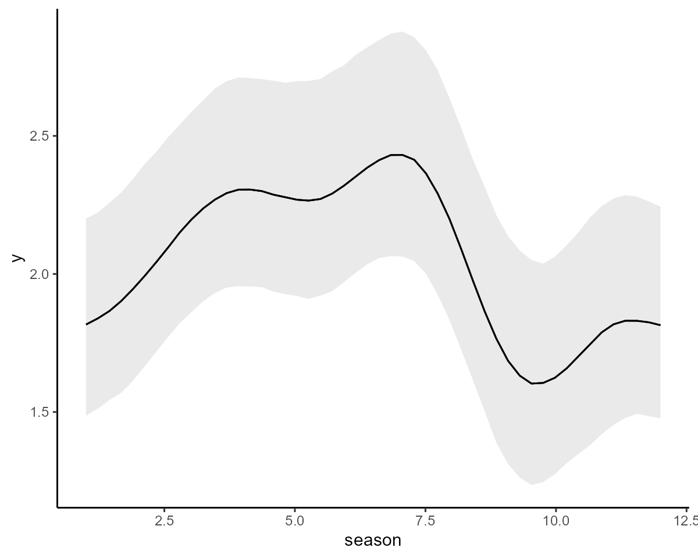

Forecasting and forecast evaluation in mvgam
Nicholas J Clark
2024-03-12
Source:vignettes/forecast_evaluation.Rmd
forecast_evaluation.RmdThe purpose of this vignette is to show how the mvgam
package can be used to produce probabilistic forecasts and to evaluate
those forecasts using a variety of proper scoring rules.
Simulating discrete time series
We begin by simulating some data to show how forecasts are computed
and evaluated in mvgam. The sim_mvgam()
function can be used to simulate series that come from a variety of
response distributions as well as seasonal patterns and/or dynamic
temporal patterns. Here we simulate a collection of three time
count-valued series. These series all share the same seasonal pattern
but have different temporal dynamics. By setting
trend_model = 'GP' and prop_trend = 0.75, we
are generating time series that have smooth underlying temporal trends
(evolving as Gaussian Processes with squared exponential kernel) and
moderate seasonal patterns. The observations are Poisson-distributed and
we allow 10% of observations to be missing.
set.seed(2345)
simdat <- sim_mvgam(T = 100,
n_series = 3,
trend_model = 'GP',
prop_trend = 0.75,
family = poisson(),
prop_missing = 0.10)The returned object is a list containing training and
testing data (sim_mvgam() automatically splits the data
into these folds for us) together with some other information about the
data generating process that was used to simulate the data
str(simdat)## List of 6
## $ data_train :'data.frame': 225 obs. of 5 variables:
## ..$ y : int [1:225] 0 1 3 0 0 0 1 0 3 1 ...
## ..$ season: int [1:225] 1 1 1 2 2 2 3 3 3 4 ...
## ..$ year : int [1:225] 1 1 1 1 1 1 1 1 1 1 ...
## ..$ series: Factor w/ 3 levels "series_1","series_2",..: 1 2 3 1 2 3 1 2 3 1 ...
## ..$ time : int [1:225] 1 1 1 2 2 2 3 3 3 4 ...
## $ data_test :'data.frame': 75 obs. of 5 variables:
## ..$ y : int [1:75] 0 1 1 0 0 0 2 2 0 NA ...
## ..$ season: int [1:75] 4 4 4 5 5 5 6 6 6 7 ...
## ..$ year : int [1:75] 7 7 7 7 7 7 7 7 7 7 ...
## ..$ series: Factor w/ 3 levels "series_1","series_2",..: 1 2 3 1 2 3 1 2 3 1 ...
## ..$ time : int [1:75] 76 76 76 77 77 77 78 78 78 79 ...
## $ true_corrs : num [1:3, 1:3] 1 0.465 -0.577 0.465 1 ...
## $ true_trends : num [1:100, 1:3] -1.45 -1.54 -1.61 -1.67 -1.73 ...
## $ global_seasonality: num [1:100] 0.0559 0.6249 1.3746 1.6805 0.5246 ...
## $ trend_params :List of 2
## ..$ alpha: num [1:3] 0.767 0.988 0.897
## ..$ rho : num [1:3] 6.02 6.94 5.04Each series in this case has a shared seasonal pattern, which we can visualise:
plot(simdat$global_seasonality[1:12],
type = 'l', lwd = 2,
ylab = 'Relative effect',
xlab = 'Season',
bty = 'l')
The resulting time series are similar to what we might encounter when dealing with count-valued data that can take small counts:
plot_mvgam_series(data = simdat$data_train,
series = 'all')
For each individual series, we can plot the training and testing data, as well as some more specific features of the observed data:
plot_mvgam_series(data = simdat$data_train,
newdata = simdat$data_test,
series = 1)
plot_mvgam_series(data = simdat$data_train,
newdata = simdat$data_test,
series = 2)
plot_mvgam_series(data = simdat$data_train,
newdata = simdat$data_test,
series = 3)
Modelling dynamics with splines
The first model we will fit uses a shared cyclic spline to capture the repeated seasonality, as well as series-specific splines of time to capture the long-term dynamics. We allow the temporal splines to be fairly complex so they can capture as much of the temporal variation as possible:
mod1 <- mvgam(y ~ s(season, bs = 'cc', k = 8) +
s(time, by = series, bs = 'cr', k = 20),
knots = list(season = c(0.5, 12.5)),
trend_model = 'None',
data = simdat$data_train)The model fits without issue:
summary(mod1, include_betas = FALSE)## GAM formula:
## y ~ s(season, bs = "cc", k = 8) + s(time, by = series, bs = "cr",
## k = 20)
##
## Family:
## poisson
##
## Link function:
## log
##
## Trend model:
## None
##
## N series:
## 3
##
## N timepoints:
## 75
##
## Status:
## Fitted using Stan
## 4 chains, each with iter = 1000; warmup = 500; thin = 1
## Total post-warmup draws = 2000
##
##
## GAM coefficient (beta) estimates:
## 2.5% 50% 97.5% Rhat n_eff
## (Intercept) -0.41 -0.21 -0.039 1 813
##
## Approximate significance of GAM observation smooths:
## edf Chi.sq p-value
## s(season) 3.77 9.48 0.01603 *
## s(time):seriesseries_1 6.50 13.64 0.09218 .
## s(time):seriesseries_2 9.49 256.09 0.00021 ***
## s(time):seriesseries_3 5.93 16.79 0.04680 *
## ---
## Signif. codes: 0 '***' 0.001 '**' 0.01 '*' 0.05 '.' 0.1 ' ' 1
##
## Stan MCMC diagnostics:
## n_eff / iter looks reasonable for all parameters
## Rhat looks reasonable for all parameters
## 0 of 2000 iterations ended with a divergence (0%)
## 0 of 2000 iterations saturated the maximum tree depth of 12 (0%)
## E-FMI indicated no pathological behavior
##
## Samples were drawn using NUTS(diag_e) at Tue Mar 12 1:56:47 PM 2024.
## For each parameter, n_eff is a crude measure of effective sample size,
## and Rhat is the potential scale reduction factor on split MCMC chains
## (at convergence, Rhat = 1)And we can plot the partial effects of the splines to see that they are estimated to be highly nonlinear
plot(mod1, type = 'smooths')
Modelling dynamics with GPs
Before showing how to produce and evaluate forecasts, we will fit a
second model to these data so the two models can be compared. This model
is equivalent to the above, except we now use Gaussian Processes to
model series-specific dynamics. This makes use of the gp()
function from brms, which can fit Hilbert space approximate
GPs. See ?brms::gp for more details.
mod2 <- mvgam(y ~ s(season, bs = 'cc', k = 8) +
gp(time, by = series, c = 5/4, k = 20,
scale = FALSE),
knots = list(season = c(0.5, 12.5)),
trend_model = 'None',
data = simdat$data_train)The summary for this model now contains information on the GP parameters for each time series:
summary(mod2, include_betas = FALSE)## GAM formula:
## y ~ s(season, bs = "cc", k = 8) + gp(time, by = series, c = 5/4,
## k = 20, scale = FALSE)
##
## Family:
## poisson
##
## Link function:
## log
##
## Trend model:
## None
##
## N series:
## 3
##
## N timepoints:
## 75
##
## Status:
## Fitted using Stan
## 4 chains, each with iter = 1000; warmup = 500; thin = 1
## Total post-warmup draws = 2000
##
##
## GAM coefficient (beta) estimates:
## 2.5% 50% 97.5% Rhat n_eff
## (Intercept) -1.1 -0.52 0.31 1 768
##
## GAM gp term marginal deviation (alpha) and length scale (rho) estimates:
## 2.5% 50% 97.5% Rhat n_eff
## alpha_gp(time):seriesseries_1 0.21 0.8 2.1 1.01 763
## alpha_gp(time):seriesseries_2 0.74 1.4 2.9 1.00 1028
## alpha_gp(time):seriesseries_3 0.50 1.1 2.8 1.00 1026
## rho_gp(time):seriesseries_1 1.20 5.1 23.0 1.00 681
## rho_gp(time):seriesseries_2 2.20 10.0 17.0 1.00 644
## rho_gp(time):seriesseries_3 1.50 8.8 23.0 1.00 819
##
## Approximate significance of GAM observation smooths:
## edf Chi.sq p-value
## s(season) 6 25 0.00016 ***
## ---
## Signif. codes: 0 '***' 0.001 '**' 0.01 '*' 0.05 '.' 0.1 ' ' 1
##
## Stan MCMC diagnostics:
## n_eff / iter looks reasonable for all parameters
## Rhat looks reasonable for all parameters
## 4 of 2000 iterations ended with a divergence (0.2%)
## *Try running with larger adapt_delta to remove the divergences
## 0 of 2000 iterations saturated the maximum tree depth of 12 (0%)
## E-FMI indicated no pathological behavior
##
## Samples were drawn using NUTS(diag_e) at Tue Mar 12 1:57:51 PM 2024.
## For each parameter, n_eff is a crude measure of effective sample size,
## and Rhat is the potential scale reduction factor on split MCMC chains
## (at convergence, Rhat = 1)We can plot the posteriors for these parameters, and for any other
parameter for that matter, using bayesplot routines. First
the marginal deviation (\(\alpha\))
parameters:

And now the length scale (\(\rho\)) parameters:

We can also plot the nonlinear effects as before:
plot(mod2, type = 'smooths')
These can also be plotted using marginaleffects
utilities:
require('ggplot2')
plot_predictions(mod2,
condition = c('time', 'series', 'series'),
type = 'link') +
theme(legend.position = 'none')
The estimates for the temporal trends are fairly similar for the two models, but below we will see if they produce similar forecasts
Forecasting with the forecast() function
Probabilistic forecasts can be computed in two main ways in
mvgam. The first is to take a model that was fit only to
training data (as we did above in the two example models) and produce
temporal predictions from the posterior predictive distribution by
feeding newdata to the forecast() function. It
is crucial that any newdata fed to the
forecast() function follows on sequentially from the data
that was used to fit the model (this is not internally checked by the
package because it might be a headache to do so when data are not
supplied in a specific time-order). When calling the
forecast() function, you have the option to generate
different kinds of predictions (i.e. predicting on the link scale,
response scale or to produce expectations; see
?forecast.mvgam for details). We will use the default and
produce forecasts on the response scale, which is the most common way to
evaluate forecast distributions
fc_mod1 <- forecast(mod1, newdata = simdat$data_test)
fc_mod2 <- forecast(mod2, newdata = simdat$data_test)The objects we have created are of class mvgam_forecast,
which contain information on hindcast distributions, forecast
distributions and true observations for each series in the data:
str(fc_mod1)## List of 16
## $ call :Class 'formula' language y ~ s(season, bs = "cc", k = 8) + s(time, by = series, bs = "cr", k = 20)
## .. ..- attr(*, ".Environment")=<environment: R_GlobalEnv>
## $ trend_call : NULL
## $ family : chr "poisson"
## $ family_pars : NULL
## $ trend_model : chr "None"
## $ drift : logi FALSE
## $ use_lv : logi FALSE
## $ fit_engine : chr "stan"
## $ type : chr "response"
## $ series_names : Factor w/ 3 levels "series_1","series_2",..: 1 2 3
## $ train_observations:List of 3
## ..$ series_1: int [1:75] 0 0 1 1 0 0 0 0 0 0 ...
## ..$ series_2: int [1:75] 1 0 0 1 1 0 1 0 1 2 ...
## ..$ series_3: int [1:75] 3 0 3 NA 2 1 1 1 1 3 ...
## $ train_times : int [1:75] 1 2 3 4 5 6 7 8 9 10 ...
## $ test_observations :List of 3
## ..$ series_1: int [1:25] 0 0 2 NA 0 2 2 1 1 1 ...
## ..$ series_2: int [1:25] 1 0 2 1 1 3 0 1 0 NA ...
## ..$ series_3: int [1:25] 1 0 0 1 0 0 1 0 1 0 ...
## $ test_times : int [1:25] 76 77 78 79 80 81 82 83 84 85 ...
## $ hindcasts :List of 3
## ..$ series_1: num [1:2000, 1:75] 1 1 0 0 0 1 1 1 0 0 ...
## .. ..- attr(*, "dimnames")=List of 2
## .. .. ..$ : NULL
## .. .. ..$ : chr [1:75] "ypred[1,1]" "ypred[2,1]" "ypred[3,1]" "ypred[4,1]" ...
## ..$ series_2: num [1:2000, 1:75] 0 0 0 0 0 0 0 1 0 0 ...
## .. ..- attr(*, "dimnames")=List of 2
## .. .. ..$ : NULL
## .. .. ..$ : chr [1:75] "ypred[1,2]" "ypred[2,2]" "ypred[3,2]" "ypred[4,2]" ...
## ..$ series_3: num [1:2000, 1:75] 3 0 2 1 0 1 2 1 5 1 ...
## .. ..- attr(*, "dimnames")=List of 2
## .. .. ..$ : NULL
## .. .. ..$ : chr [1:75] "ypred[1,3]" "ypred[2,3]" "ypred[3,3]" "ypred[4,3]" ...
## $ forecasts :List of 3
## ..$ series_1: num [1:2000, 1:25] 1 3 2 1 0 0 1 1 0 0 ...
## ..$ series_2: num [1:2000, 1:25] 6 0 0 0 0 2 0 0 0 0 ...
## ..$ series_3: num [1:2000, 1:25] 0 1 1 3 3 1 3 2 4 2 ...
## - attr(*, "class")= chr "mvgam_forecast"We can plot the forecasts for each series from each model using the
S3 plot method for objects of this class:
plot(fc_mod1, series = 1)
## Out of sample CRPS:
## [1] 14.62964
plot(fc_mod2, series = 1)
## Out of sample DRPS:
## [1] 10.92516
plot(fc_mod1, series = 2)
## Out of sample CRPS:
## [1] 84201962708
plot(fc_mod2, series = 2)
## Out of sample DRPS:
## [1] 14.31152
plot(fc_mod1, series = 3)
## Out of sample CRPS:
## [1] 32.44136
plot(fc_mod2, series = 3)
## Out of sample DRPS:
## [1] 15.44332Clearly the two models do not produce equivalent forecasts. We will come back to scoring these forecasts in a moment.
Forecasting with newdata in mvgam()
The second way we can produce forecasts in mvgam is to
feed the testing data directly to the mvgam() function as
newdata. This will include the testing data as missing
observations so that they are automatically predicted from the posterior
predictive distribution using the generated quantities
block in Stan. As an example, we can refit
mod2 but include the testing data for automatic
forecasts:
mod2 <- mvgam(y ~ s(season, bs = 'cc', k = 8) +
gp(time, by = series, c = 5/4, k = 20,
scale = FALSE),
knots = list(season = c(0.5, 12.5)),
trend_model = 'None',
data = simdat$data_train,
newdata = simdat$data_test)Because the model already contains a forecast distribution, we do not
need to feed newdata to the forecast()
function:
fc_mod2 <- forecast(mod2)The forecasts will be nearly identical to those calculated previously:
plot(fc_mod2, series = 1)
## Out of sample DRPS:
## [1] 10.85762Scoring forecast distributions
A primary purpose of the mvgam_forecast class is to
readily allow forecast evaluations for each series in the data, using a
variety of possible scoring functions. See
?mvgam::score.mvgam_forecast to view the types of scores
that are available. A useful scoring metric is the Continuous Rank Probability Score (CRPS). A CRPS
value is similar to what we might get if we calculated a weighted
absolute error using the full forecast distribution.
## List of 4
## $ series_1 :'data.frame': 25 obs. of 5 variables:
## ..$ score : num [1:25] 0.1938 0.1366 1.355 NA 0.0348 ...
## ..$ in_interval : num [1:25] 1 1 1 NA 1 1 1 1 1 1 ...
## ..$ interval_width: num [1:25] 0.9 0.9 0.9 0.9 0.9 0.9 0.9 0.9 0.9 0.9 ...
## ..$ eval_horizon : int [1:25] 1 2 3 4 5 6 7 8 9 10 ...
## ..$ score_type : chr [1:25] "crps" "crps" "crps" "crps" ...
## $ series_2 :'data.frame': 25 obs. of 5 variables:
## ..$ score : num [1:25] 0.379 0.306 0.941 0.5 0.573 ...
## ..$ in_interval : num [1:25] 1 1 1 1 1 1 1 1 1 NA ...
## ..$ interval_width: num [1:25] 0.9 0.9 0.9 0.9 0.9 0.9 0.9 0.9 0.9 0.9 ...
## ..$ eval_horizon : int [1:25] 1 2 3 4 5 6 7 8 9 10 ...
## ..$ score_type : chr [1:25] "crps" "crps" "crps" "crps" ...
## $ series_3 :'data.frame': 25 obs. of 5 variables:
## ..$ score : num [1:25] 0.32 0.556 0.379 0.362 0.219 ...
## ..$ in_interval : num [1:25] 1 1 1 1 1 1 1 1 1 1 ...
## ..$ interval_width: num [1:25] 0.9 0.9 0.9 0.9 0.9 0.9 0.9 0.9 0.9 0.9 ...
## ..$ eval_horizon : int [1:25] 1 2 3 4 5 6 7 8 9 10 ...
## ..$ score_type : chr [1:25] "crps" "crps" "crps" "crps" ...
## $ all_series:'data.frame': 25 obs. of 3 variables:
## ..$ score : num [1:25] 0.892 0.999 2.675 NA 0.827 ...
## ..$ eval_horizon: int [1:25] 1 2 3 4 5 6 7 8 9 10 ...
## ..$ score_type : chr [1:25] "sum_crps" "sum_crps" "sum_crps" "sum_crps" ...
crps_mod1$series_1## score in_interval interval_width eval_horizon score_type
## 1 0.19375525 1 0.9 1 crps
## 2 0.13663925 1 0.9 2 crps
## 3 1.35502175 1 0.9 3 crps
## 4 NA NA 0.9 4 crps
## 5 0.03482775 1 0.9 5 crps
## 6 1.55416700 1 0.9 6 crps
## 7 1.51028900 1 0.9 7 crps
## 8 0.62121225 1 0.9 8 crps
## 9 0.62630125 1 0.9 9 crps
## 10 0.59853100 1 0.9 10 crps
## 11 1.30998625 1 0.9 11 crps
## 12 2.04829775 1 0.9 12 crps
## 13 0.61251800 1 0.9 13 crps
## 14 0.14052300 1 0.9 14 crps
## 15 0.65110800 1 0.9 15 crps
## 16 0.07973125 1 0.9 16 crps
## 17 0.07675600 1 0.9 17 crps
## 18 0.09382375 1 0.9 18 crps
## 19 0.12356725 1 0.9 19 crps
## 20 NA NA 0.9 20 crps
## 21 0.20173600 1 0.9 21 crps
## 22 0.84066825 1 0.9 22 crps
## 23 NA NA 0.9 23 crps
## 24 1.06489225 1 0.9 24 crps
## 25 0.75528825 1 0.9 25 crpsThe returned list contains a data.frame for each series
in the data that shows the CRPS score for each evaluation in the testing
data, along with some other useful information about the fit of the
forecast distribution. In particular, we are given a logical value (1s
and 0s) telling us whether the true value was within a pre-specified
credible interval (i.e. the coverage of the forecast distribution). The
default interval width is 0.9, so we would hope that the values in the
in_interval column take a 1 approximately 90% of the time.
This value can be changed if you wish to compute different coverages,
say using a 60% interval:
crps_mod1 <- score(fc_mod1, score = 'crps', interval_width = 0.6)
crps_mod1$series_1## score in_interval interval_width eval_horizon score_type
## 1 0.19375525 1 0.6 1 crps
## 2 0.13663925 1 0.6 2 crps
## 3 1.35502175 0 0.6 3 crps
## 4 NA NA 0.6 4 crps
## 5 0.03482775 1 0.6 5 crps
## 6 1.55416700 0 0.6 6 crps
## 7 1.51028900 0 0.6 7 crps
## 8 0.62121225 1 0.6 8 crps
## 9 0.62630125 1 0.6 9 crps
## 10 0.59853100 1 0.6 10 crps
## 11 1.30998625 0 0.6 11 crps
## 12 2.04829775 0 0.6 12 crps
## 13 0.61251800 1 0.6 13 crps
## 14 0.14052300 1 0.6 14 crps
## 15 0.65110800 1 0.6 15 crps
## 16 0.07973125 1 0.6 16 crps
## 17 0.07675600 1 0.6 17 crps
## 18 0.09382375 1 0.6 18 crps
## 19 0.12356725 1 0.6 19 crps
## 20 NA NA 0.6 20 crps
## 21 0.20173600 1 0.6 21 crps
## 22 0.84066825 1 0.6 22 crps
## 23 NA NA 0.6 23 crps
## 24 1.06489225 1 0.6 24 crps
## 25 0.75528825 1 0.6 25 crpsWe can also compare forecasts against out of sample observations
using the Expected Log Predictive Density (ELPD; also known as the
log score). The ELPD is a strictly proper scoring rule that can be
applied to any distributional forecast, but to compute it we need
predictions on the link scale rather than on the outcome scale. This is
where it is advantageous to change the type of prediction we can get
using the forecast() function:
link_mod1 <- forecast(mod1, newdata = simdat$data_test, type = 'link')
score(link_mod1, score = 'elpd')$series_1## score eval_horizon score_type
## 1 -0.5304414 1 elpd
## 2 -0.4298955 2 elpd
## 3 -2.9617583 3 elpd
## 4 NA 4 elpd
## 5 -0.2007644 5 elpd
## 6 -3.3781408 6 elpd
## 7 -3.2729088 7 elpd
## 8 -2.0363750 8 elpd
## 9 -2.0670612 9 elpd
## 10 -2.0844818 10 elpd
## 11 -3.0576463 11 elpd
## 12 -3.6291058 12 elpd
## 13 -2.1692669 13 elpd
## 14 -0.2960899 14 elpd
## 15 -2.3738851 15 elpd
## 16 -0.2160804 16 elpd
## 17 -0.2036782 17 elpd
## 18 -0.2115539 18 elpd
## 19 -0.2235072 19 elpd
## 20 NA 20 elpd
## 21 -0.2413680 21 elpd
## 22 -2.6791984 22 elpd
## 23 NA 23 elpd
## 24 -2.6851981 24 elpd
## 25 -0.2836901 25 elpdFinally, when we have multiple time series it may also make sense to
use a multivariate proper scoring rule. mvgam offers two
such options: the Energy score and the Variogram score. The first
penalizes forecast distributions that are less well calibrated against
the truth, while the second penalizes forecasts that do not capture the
observed true correlation structure. Which score to use depends on your
goals, but both are very easy to compute:
## List of 4
## $ series_1 :'data.frame': 25 obs. of 3 variables:
## ..$ in_interval : num [1:25] 1 1 1 NA 1 1 1 1 1 1 ...
## ..$ interval_width: num [1:25] 0.9 0.9 0.9 0.9 0.9 0.9 0.9 0.9 0.9 0.9 ...
## ..$ eval_horizon : int [1:25] 1 2 3 4 5 6 7 8 9 10 ...
## $ series_2 :'data.frame': 25 obs. of 3 variables:
## ..$ in_interval : num [1:25] 1 1 1 1 1 1 1 1 1 NA ...
## ..$ interval_width: num [1:25] 0.9 0.9 0.9 0.9 0.9 0.9 0.9 0.9 0.9 0.9 ...
## ..$ eval_horizon : int [1:25] 1 2 3 4 5 6 7 8 9 10 ...
## $ series_3 :'data.frame': 25 obs. of 3 variables:
## ..$ in_interval : num [1:25] 1 1 1 1 1 1 1 1 1 1 ...
## ..$ interval_width: num [1:25] 0.9 0.9 0.9 0.9 0.9 0.9 0.9 0.9 0.9 0.9 ...
## ..$ eval_horizon : int [1:25] 1 2 3 4 5 6 7 8 9 10 ...
## $ all_series:'data.frame': 25 obs. of 3 variables:
## ..$ score : num [1:25] 0.773 1.147 1.226 NA 0.458 ...
## ..$ eval_horizon: int [1:25] 1 2 3 4 5 6 7 8 9 10 ...
## ..$ score_type : chr [1:25] "energy" "energy" "energy" "energy" ...The returned object still provides information on interval coverage
for each individual series, but there is only a single score per horizon
now (which is provided in the all_series slot):
energy_mod2$all_series## score eval_horizon score_type
## 1 0.7728517 1 energy
## 2 1.1469836 2 energy
## 3 1.2258781 3 energy
## 4 NA 4 energy
## 5 0.4577536 5 energy
## 6 1.8094487 6 energy
## 7 1.4887317 7 energy
## 8 0.7651593 8 energy
## 9 1.1180634 9 energy
## 10 NA 10 energy
## 11 1.5008324 11 energy
## 12 3.2142460 12 energy
## 13 1.6129732 13 energy
## 14 1.2704438 14 energy
## 15 1.1335958 15 energy
## 16 1.8717420 16 energy
## 17 NA 17 energy
## 18 0.7953392 18 energy
## 19 0.9919119 19 energy
## 20 NA 20 energy
## 21 1.2461964 21 energy
## 22 1.5170615 22 energy
## 23 NA 23 energy
## 24 2.3824552 24 energy
## 25 1.5314557 25 energyYou can use your score(s) of choice to compare different models. For
example, we can compute and plot the difference in CRPS scores for each
series in data. Here, a negative value means the Gaussian Process model
(mod2) is better, while a positive value means the spline
model (mod1) is better.
crps_mod1 <- score(fc_mod1, score = 'crps')
crps_mod2 <- score(fc_mod2, score = 'crps')
diff_scores <- crps_mod2$series_1$score -
crps_mod1$series_1$score
plot(diff_scores, pch = 16, cex = 1.25, col = 'darkred',
ylim = c(-1*max(abs(diff_scores), na.rm = TRUE),
max(abs(diff_scores), na.rm = TRUE)),
bty = 'l',
xlab = 'Forecast horizon',
ylab = expression(CRPS[GP]~-~CRPS[spline]))
abline(h = 0, lty = 'dashed', lwd = 2)
gp_better <- length(which(diff_scores < 0))
title(main = paste0('GP better in ', gp_better, ' of 25 evaluations',
'\nMean difference = ',
round(mean(diff_scores, na.rm = TRUE), 2)))
diff_scores <- crps_mod2$series_2$score -
crps_mod1$series_2$score
plot(diff_scores, pch = 16, cex = 1.25, col = 'darkred',
ylim = c(-1*max(abs(diff_scores), na.rm = TRUE),
max(abs(diff_scores), na.rm = TRUE)),
bty = 'l',
xlab = 'Forecast horizon',
ylab = expression(CRPS[GP]~-~CRPS[spline]))
abline(h = 0, lty = 'dashed', lwd = 2)
gp_better <- length(which(diff_scores < 0))
title(main = paste0('GP better in ', gp_better, ' of 25 evaluations',
'\nMean difference = ',
round(mean(diff_scores, na.rm = TRUE), 2)))
diff_scores <- crps_mod2$series_3$score -
crps_mod1$series_3$score
plot(diff_scores, pch = 16, cex = 1.25, col = 'darkred',
ylim = c(-1*max(abs(diff_scores), na.rm = TRUE),
max(abs(diff_scores), na.rm = TRUE)),
bty = 'l',
xlab = 'Forecast horizon',
ylab = expression(CRPS[GP]~-~CRPS[spline]))
abline(h = 0, lty = 'dashed', lwd = 2)
gp_better <- length(which(diff_scores < 0))
title(main = paste0('GP better in ', gp_better, ' of 25 evaluations',
'\nMean difference = ',
round(mean(diff_scores, na.rm = TRUE), 2)))
The GP model consistently gives better forecasts, and the difference between scores grows quickly as the forecast horizon increases. This is not unexpected given the way that splines linearly extrapolate outside the range of training data
Further reading
The following papers and resources offer useful material about Bayesian forecasting and proper scoring rules:
Hyndman, Rob J., and George Athanasopoulos. Forecasting: principles and practice. OTexts, 2018.
Gneiting, Tilmann, and Adrian E. Raftery. Strictly proper scoring rules, prediction, and estimation Journal of the American statistical Association 102.477 (2007) 359-378.
Simonis, Juniper L., Ethan P. White, and SK Morgan Ernest. Evaluating probabilistic ecological forecasts Ecology 102.8 (2021) e03431.